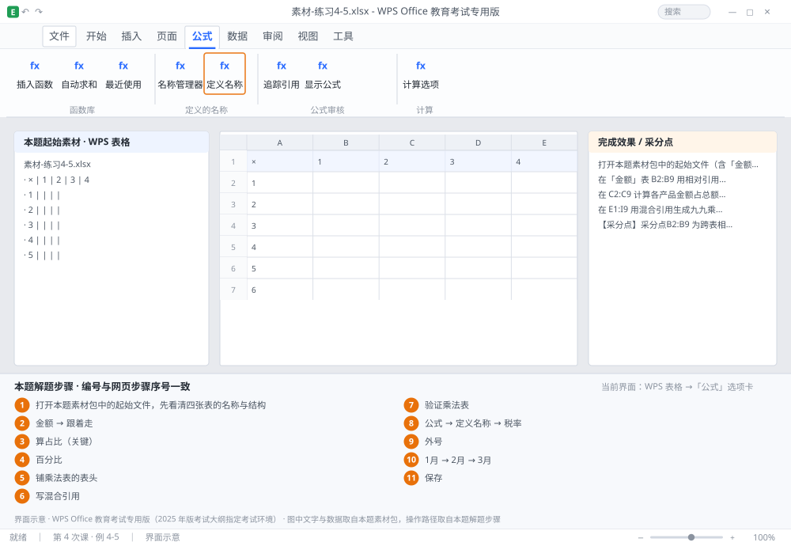

完成比对文档 · 例 4-5
三种引用：跨表算金额、$B$10 算占比、$A2*E$1 做乘法表、名称算税额 ｜ 第 4 次课 / WPS 表格 ｜ 网页：实操-表格1.html ｜ 考试环境：WPS Office 教育考试专用版（2025 年版考试大纲指定考试环境）
用途 本页按修订后的题目要求与解题步骤生成，是交卷自查的结果基准：
逐项列出每一步应出现的可复核结果，配合模拟操作截图与解题结果文件使用。
它不是素材包的一部分，不会预置答案动作；起始素材仍从本题素材包下载。
一、本题起始素材包
目录：练习素材/练习4-5-单元格引用/ ｜
下载包：练习素材/下载/练习4-5-单元格引用.zip
二、题目要求
- 打开本题素材包中的起始文件（含「金额」「单价」「数量」「参数」四张表，参数!B2 = 0.13）。
- 在「金额」表 B2:B9 用相对引用计算 = 单价 × 数量（引用其他工作表）。
- 在 C2:C9 计算各产品金额占总额的比例，总额在 B10，要求下拉时总额不变（用绝对引用）。
- 在 E1:I9 用混合引用生成九九乘法表（第 1 行为 1~9，A 列也为 1~9）。
- 定义名称「税率」指向 参数!$B$2，在 D2:D9 用 =B2*税率 计算税额。
- 在 F12 用三维引用汇总 1 月、2 月、3 月三张表 B2 单元格之和。
- 保存为 学号-姓名-练习4-5.xlsx。
三、解题步骤（编号与下方核对表、截图编号一致）
- 打开本题素材包中的起始文件，先看清四张表的名称与结构。表名有空格或数字开头时，引用要加单引号（如 '1月'!B2）。
- 相对引用。在「金额」表 B2 输入 =单价!B2*数量!B2 → Enter → 选中 B2 拖填充柄到 B9。下拉后 B3 会自动变成 单价!B3*数量!B3——这就是相对引用的「跟着走」。
- 算占比（关键）。C2 输入 =B2/$B$10 → 下拉到 C9。$B$10 的行和列都被锁定，下拉时始终指向总额；写成 B10 就会变成 B11、B12（空白），结果显示 #DIV/0!。
- 设百分比格式。选中 C2:C9 → Ctrl+1 → 分类「百分比」→ 小数位数 1 → 确定。
- 铺乘法表的表头。E1 输入 1、F1 输入 2 → 选中 E1:F1 → 拖到 I1（得到 1~9）；A2 输入 1、A3 输入 2 → 选中拖到 A10（得到 1~9）。
- 写混合引用。E2 输入 =$A2*E$1 → Enter → 选中 E2 向右拖到 I2，再向下拖到 E10。理解方式：$A2 锁列不锁行（右拉时始终取 A 列），E$1 锁行不锁列（下拉时始终取第 1 行）。
- 验证乘法表。抽查 E3（=3×1=3）与 I9（=9×9=81），数值正确说明引用方向对。
- 定义名称。「公式」→「定义名称」→ 名称输入「税率」→ 引用位置输入 =参数!$B$2 → 确定。
- 用名称计算。D2 输入 =B2*税率 → 下拉到 D9。名称相当于给单元格取了个「外号」，公式里可直接用。
- 三维引用。F12 输入 =SUM('1月:3月'!B2) → Enter。若表名是「1月」「2月」「3月」，跨表区域写法为 '1月:3月'!B2；也可写成 =SUM('1月'!B2,'2月'!B2,'3月'!B2)。
- 保存。Ctrl+S。
四、完成效果 / 采分点
采分点B2:B9 为跨表相对引用且结果正确 · C2:C9 使用 $B$10 绝对引用（下拉不错位） · E1:I9 用 $A2*E$1 混合引用生成完整乘法表 · 已定义名称「税率」并指向 参数!$B$2 · D 列用名称计算 · F12 三维引用求和正确
五、逐项完成核对表
| 步骤 | 关键操作路径 | 应出现的结果（可复核） |
|---|
| 1 | 打开本题素材包中的起始文件，先看清四张表的名称与结构 | B2 |
| 2 | 相对引用 | 「金额」、B2、B9、B3、「跟着走」 |
| 3 | 算占比（关键） | C2、B2、C9、B10、B11 |
| 4 | 设百分比格式 | C2:C9、「百分比」 |
| 5 | 铺乘法表的表头 | E1、F1、E1:F1、I1、A2 |
| 6 | 写混合引用 | E2、A2、I2、E10、1 行 |
| 7 | 验证乘法表 | E3、I9 |
| 8 | 定义名称 | 「公式」、「定义名称」、「税率」 |
| 9 | 用名称计算 | D2、B2、D9、「外号」 |
| 10 | 三维引用 | F12、=SUM(、B2、「1月」、「2月」 |
| 11 | 保存 | 保存 |
六、模拟操作截图

界面示意 · WPS Office 教育考试专用版 · 橙色编号与本题解题步骤序号一致；
图中文字与数据取自本题素材包，功能入口取自本题解题步骤。
核对方法：按网页解题步骤完成并另存自己的成稿后，逐行比对本表第 3 列的
参数、公式、区域、文件名与对象数量；再对照网页「完成效果 / 采分点」检查版式是否一致。